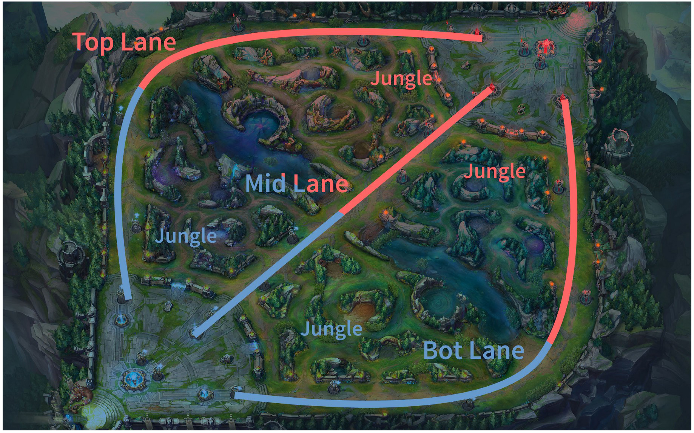

Bienvenido a Cba & Cba news
Cba&Cba.news es una pagina de noticias e informacion general acerca del League of Legends
Abarcaremos desde los parches y modificaciones de campeones hasta eventos de la escena competitiva, ya sean los equipos del momento, highliths y eventos masivos como pueden ser la LCS, LLS, LLA, entre otros.
Pero primero que nada, ¿Que es este horrible y, a la vez, maravilloso juego?
League of Legends es un juego de estrategia por equipos en el que dos equipos de cinco campeones se enfrentan con el objetivo de destruir el nexo o base enemiga. Se elige de entre un elenco de 140 campeones, cada uno con habilidades distintas, los cuales se enfrentan en un mapa como el mostrado a continuacion:
Lineas o carriles
EL juego consta de tres carriles principales por los que los campeones recorreran su camino hacia el nexo enemigo. Por lo general existe un convenio general sobre que tipo de campeones son convenientes de utilizar en cada linea. Esto es conocido como "meta" y , si bien suele sufrir cambios a lo largo de las distintos parches y actualizaciones que el juego recibe, las bases explicadas a continuacion han permanecido casi inalterables a lo largo de los ultimos años:
- Top-line o carril superior: Generalmente son utilizados campeones del tipo luchador o tanke de tipo melee (cuerpo a cuerpo), aunque a veces pueden aparecer campeones a distancia
- Mid-line o carril central: Es el lugar para los personajes de mayor daño del juego, por lo general magos y asesinos.
- Bot-lane o carril inferior: En esta linea suele haber dos campeones por equipo. En primer lugar esta el AD-Carry (tambien conocido como ADC), el cual es el campeon que hace mas daño en la linea, siendo este por lo general un campeon tirador (a distancia). El otro campeon es el support, el cual se encarga de proteger al ADC y apoyarlo a la hora de atacar al enemigo, ya sea dandole mas vida o ataque a los aliados; o inmovilizando o silenciando campeones enemigos.
- Jungla: Es el nombre que se le da a la parte del mapa ubicada entre las lineas, la cual esta plagada de campamentos de monstruos que, al matarlos, otorgan distintas bonificaciones al campeon que los mata. Por lo general de esto se encarga el Jungla, que es el campeon que se mueve entre las lineas para ayudar a los demas aliados. Lo ideal es que en este rol se utilicen campeones con gran movilidad capaces de ir rapidamente de una linea a otra; y que tengan habilidades de control de multitudes, es decir, capaces de ralentizar o inmovilizar enemigos.